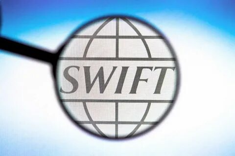
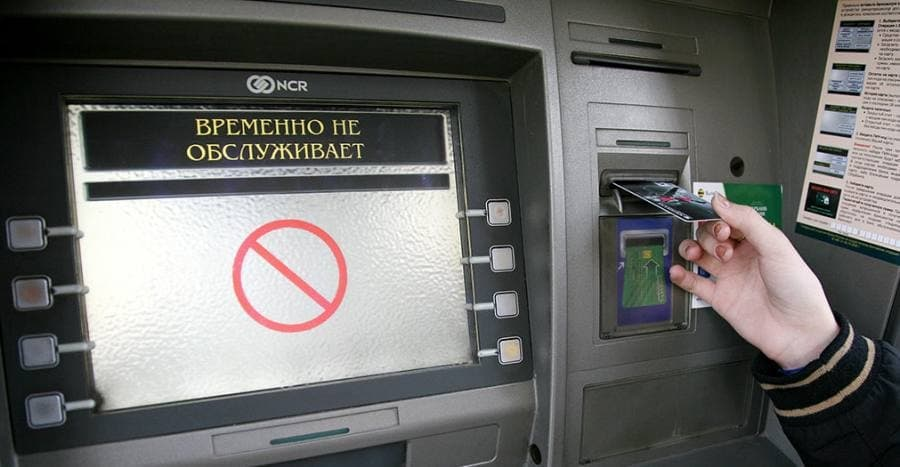

Из-за военной операции России на Украине ЕС, США и Канада согласовали санкции против Москвы, в том числе отключение ряда российских банков от SWIFT
Европейский союз обсуждает отключение от SWIFT семи российских банков, включая ВТБ, пишет Bloomberg со ссылкой на готовящееся предложение. Помимо ВТБ, в ЕС выбрали «Открытие», Новикомбанк, Промсвязьбанк, Совкомбанк и ВЭБ.РФ.
Все эти банки уже вошли в санкционные списки. Окончательный список необходимо будет согласовать с другими юрисдикциями, включая США, отмечают собеседники агентства, знакомые с этим вопросом.
Окончательный список еще может измениться и должен быть согласован с другими странами, включая США, утверждают знакомые с ситуацией источники Bloomberg. Представитель Еврокомиссии от комментариев отказался.
Исходно против отключения России от SWIFT возражали несколько европейских государств, опасаясь последствий для собственных экономик, однако в выходные Европейская комиссия, США, Франция, Германия, Италия, Великобритания и Канада в совместном заявлении все же объявили о санкциях.
В самой SWIFT 1 марта сказали, что примут решение об отключении российских банков после того, как получат юридические инструкции по этому поводу. SWIFT представляет собой систему обмена данными о переводах, платежах и обмене ценными бумагами по специальной сети. Она не владеет никакими активами и не управляет счетами своих клиентов, однако доступ к ней важен в силу ее широкого применения на глобальном уровне, гибкости и удобства.